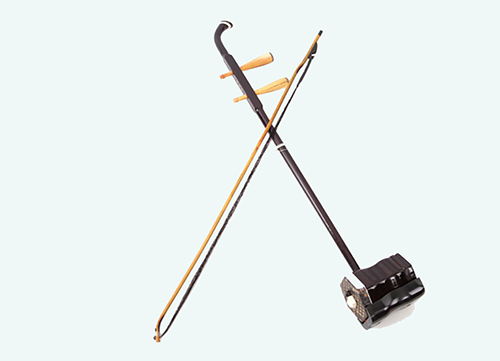

中国的传统拉弦乐器
拉弦乐器主要指胡琴类乐器。其历史虽然比其它民族乐器较短，但由于发音优美，有极丰富的表现力，有很高的演奏技巧和艺术水平，拉弦乐器被广泛使用于独奏、重奏、合奏与伴奏。
拉弦乐器大多为两弦少数用四弦如：四胡、革胡、艾捷克等。大多数琴筒蒙的蛇皮、蟒皮、羊皮等；少数用木板如：椰胡、板胡等。少数是扁形或扁圆形如：马头琴、坠胡、板胡等，其音色有的优雅、柔和有的清晰、明亮；有的刚劲、欢快、富于歌唱性。
典型乐器：二胡、板胡、革胡、马头琴、艾捷克、京胡、中胡、高胡。
|  |
©2017 - 柴臻豪 胡苏兴 回首页 |